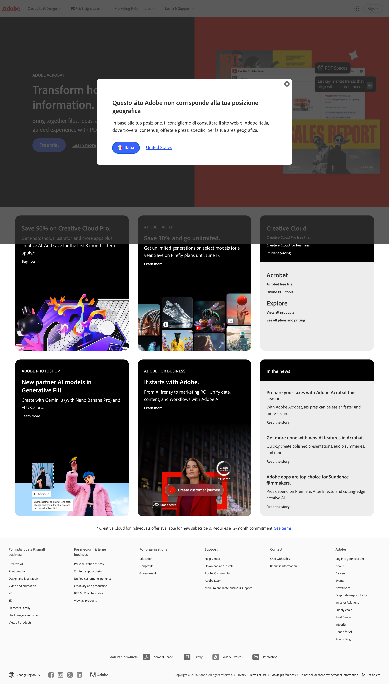
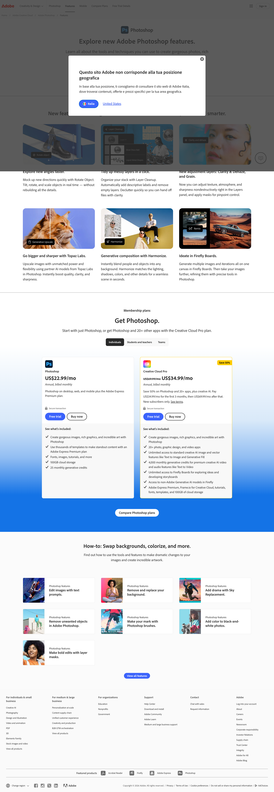
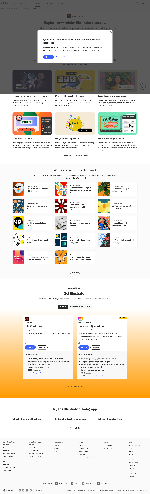

Captured screenshots
home

express

products-photoshop

products-photoshop-features

products-illustrator-features

products-premiere-features

Descriptive snapshot of the captured marketing surface. Renders in Adobe's own captured palette + Adobe Clean type stack (system fallback when font files aren't loaded locally).
7/7 pages successfully extracted across home + Express + Photoshop + 4 product feature pages. no failures
Bot-management: headed Chrome required (Adobe Akamai blocks bundled-chromium). Consent: none-detected on this geo. Geolocation modal overlays home screenshot; DOM captured underneath cleanly.
Scope notes: business.adobe.com (6 of user's 12 must-include URLs) excluded — different origin, deferred to sister project. Font files: 0 captured (Adobe loads via Typekit JS injection, not direct @font-face). Media downloads: 1/30+ (lazy-load filter rejected images without `naturalWidth` yet). Cited where it would matter for direction.
Aggregated across all 7 pages, frequency-sorted, near-duplicates collapsed. Adobe blue #3b63fb is the only saturated CTA color; Adobe red #eb1000 is reserved (not in palette role, captured via samples / brand lockup context).
Adobe Clean (body) + Adobe Clean Display (headings) at 6 weights (300/400/600/700/800/900). Scale: ad-hoc (ratios 1.286, 1.0, 1.273, 1.1 — no canonical modular fit). Mixed-case headings; period-terminated marquee voice.
Bring together AI-powered insights, intuitive content creation, and secure collaboration — so teams can uncover findings, create polished reports, and work together quickly.
Per-level weighted mode: 36px / weight 700 · h2 28px / 700 · h3 22px / 700 · h4 20px / 700 · h5 28px (mixed). Design samples use fluid clamp() sizing reaching 80px on wide viewports; the captured pages aggregate to the discrete sizes above.
One saturated CTA color (Adobe blue) + outline for secondary. 16px radius, 40h primary (32h --sm). Pairing rule: primary + outline on light; solid-white + ghost-white on dark.
20px outer radius (Adobe.com inner), 4px inset border creating a visible gap to the 16px inner-radius white surface. Cards carry no shadow; hierarchy comes from radius + surface tone.
| Type | Value | Occurrences | Use |
|---|---|---|---|
| Border radius (primary) | 20px | 65 | Card outer, button outer (Adobe.com inner) |
| Border radius (secondary) | 16px | 42 | Card inner, samples' card default |
| Border radius (small) | 2px / 4px / 8px | 39+24+16 | Form fields, small badges |
| Border radius (pill) | 999px / 25-26px (high) | 28+7+7 | Search bars, eyebrow chips |
| Shadow | 0 1px 2px rgba(0,0,0,0.06) | cross-page | Buttons |
| Shadow | 0 4px 16px rgba(0,0,0,0.08) | cross-page | Cards (samples) |
| Gradient (reserved) | linear-gradient(135deg, #8D88F2, #EB1000) | samples | AI add-on lockup border (RESERVED) |
#000.Richer system-component detection (cross-promo bands, persistent CTAs, breadcrumbs) requires more pages — defer to sister project or wider crawl.
Anchor heading detected: "General information" — appearing in 3+ pages, likely a footer-adjacent heading rather than a hero-level cross-promo. Weak signal at this crawl size. Real cross-promo detection (e.g. "Looking for something specific?" patterns Adobe uses on inner pages) needs a larger crawl.
Mechanical rules from brand-review-template.md § Detectors. Each tension is a flag, not a critique — it's information for /stardust:direct to consider.
#3b63fb appears 91 times in the captured data, all in usedAs: ["background"]. No instances as text or border. This is intentional brand discipline (one saturated CTA color reserved to filled buttons) but it's worth flagging for direct so variants don't accidentally introduce blue text or blue borders.clamp() sizing in the design samples and the cross-page weighted mode aggregates to mixed discrete sizes. Direction phase should decide whether to (a) adopt a strict modular scale, (b) keep the fluid clamp pattern, or (c) accept the ad-hoc reality and document.#000 and #ffffff on every captured page (footer black, body white). The stardust default "no pure black/white" rule must be inverted. (2) Backdrop-blur glassmorphism on nav: the captured nav uses backdrop-filter: blur(64–128px) over rgba(255,255,255,0.64). Brand-faithful and load-bearing.

